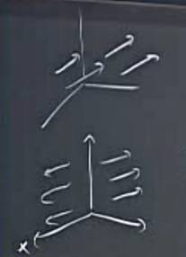

Ders 31
Önceki derste dolam (curl) kavramını işledik, bir vektör alanının dönüşünü hesaplıyordu, elde edilen vektörün yönü dönüş yönü, vektörün büyüklüğü ise açısal hızın iki katı idi.
Örnek olarak alttaki alanlara bakalım,

Figürlerden birincisi $\vec{F} = < a,b,c > $ diyelim, sabit bir vektör alanı, her noktada aynı hızda yer değişim var, burada dönüş göremiyoruz. Bu alan üzerinde dolam hesabı yaparken bir sürü kısmı türev alınacak tabii, ve sabit değerlerin türevleri sıfır olacağı için $\mathrm{curl} \vec{F} = 0$ olur.
İkinci figürde $x$ ekseni boyunca esnetme yapan bir görülüyor, tüm gidişat $x$'e paralel, diyelim $\vec{F} = < x, 0, 0 >$. Bu alanın dolamı yine sıfır. Dolam esneme gibi kavramları ölçemez, uzaklaşım (divergence) bunu yapabilirdi, ama elde dönüş yok, demek ki dolam da yok.
Fakat soyle bir alan olsaydi $\vec{F} = < -y, x, 0 >$ yani $z$ ekseni etrafinda $xy$ duzlemine paralel bir donus var, burada dolam $\mathrm{curl} \vec{F} = 2 k$ elde ederdi.
Daha çetrefil alanlar olabilir, mesela dışarıdaki Charles nehrini düşünürsek, nehrin sıvısının genel akışı, hız vektörü, genelde okyanus yönündedir, ama suyun bazı bölgelerinde çoğunlukla burgaç akımları (eddy current) görülebilir, bu noktalarda dolam sıfır olmayan sonuçlar verir.
Dolam bize başka ne şekillerde yardımcı olur? Mesela bir vektör alanının muhafazakar (conservatıve) olup olmadığını dolam ile anlayabiliriz. Kural şudur bir vektör alanı sadece ve sadece dolamı sıfır ise muhafazakar bir alandır. Bu durumlarda bir potansiyel fonksiyon ararız ve Temel Kanunu devreye sokarız.
Bir diğer kullanım alanı, düzlem örneklerinden hatırlarsak, çizgi entegrallerini (line integrals) çift entegrallere (double integrals) çevirmek içindir. Green'in Teorisi bunu sağlıyordu. Ve şimdi göreceğiz ki benzer bir çevirimi üç boyutlu uzayda da yapabiliyoruz. Buna Stokes'un Teorisi (Stokes' Theorem) ismi veriliyor.
[devam edecek]
Kaynaklar
Yukarı